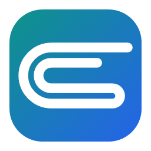
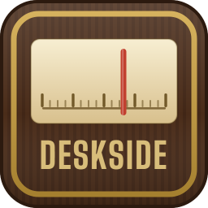
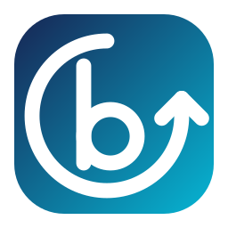

Clipee
Windows 10 and 11A fast, private clipboard manager. It remembers what you copy, so you can find it and paste it again. Opens with Ctrl+Alt+V.
Every app here is free, with no ads, no tracking and no catch. I spend a long time on the small details. If one of them earns a place on your computer, you can chip in.
Nothing is ever locked behind a donation. The Ko-fi button is loaded from Ko-fi.

A fast, private clipboard manager. It remembers what you copy, so you can find it and paste it again. Opens with Ctrl+Alt+V.

A desktop internet radio that looks like a radio: search for stations, displays song title & artist, set play schedules, amazing themes, and much more.
Scannable QR tags for luggage, cases and stickers. When someone finds your lost item, they scan the tag and leave you a message.


Fast, private backup for Windows. Still being built.